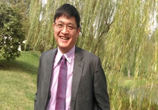

| 主持人 |
臺灣教育大學系統總校長 吳清基 |
| 現職 |
臺灣教育大學系統總校長 |
| 學歷 |
國立臺灣師範大學教育學博士 |
| 經歷 |
教育部中等教育司司長
技術職業教育司司長
行政院參事
教育部常務次長
教育部政務次長
國立教育研究院籌備處主任
臺北市政府教育局局長
臺北市副市長
教育部部長
|
|
| 主講人 |

世新大學終身教育學院副院長 蘇建州 |
| 現職 |
世新大學終身教育學院副院長 |
| 學歷 |
美國芝加哥大學國家民意研究中心博士後研究
國立清華大學工業工程與管理學系博士
|
| 經歷 |
世新大學傳播管理學系(所)主任
美國芝加哥大學國家民意研究中心博士後研究
清華大學工業工程與管理博士
美國傅爾布萊特訪問學者
經濟部服務業創新研發計畫(SIIR)廣告、設計組召集人
台北縣政府研考會研考委員
世新大學民調中心專案顧問與主持人
世新大學境外(上海)碩士專班傳播管理學系創系主任
東森綜合台暨超視、東森電影/洋片台節目諮詢委員
民視新聞部自律暨諮詢委員
考試院公務人員升官等考試(薦任、簡任)典試委員
政府採購評選委員會專家學者資料庫審查委員
經濟部小型企業創新研發計畫(SBIR)審查委員
經濟部服務業創新研發計畫審查委員
商業司推動廣告業發展計畫審查委員
經濟部能源領域研究計畫績效管理與評鑑作業評鑑委員
行政院新聞局台灣尚讚專案諮詢委員
教育部技術校院評鑑委員
|
|
| 主持人 |
國立中正大學運動競技學系 林晉榮 |
| 現職 |
國立中正大學運動競技學系教授 |
| 學歷 |
Loughborough University, U.K. 體育運動科學及休閒管理系博士
國立體育學院體育研究所碩士
私立輔仁大學體育學系學士
|
| 經歷 |
教育部永續發展委員會委員
教育部技專院校申請發展學校重點特色暨提昇教學品質專案補助計畫審查委員
中華民國大專院校體育總會第五屆常務理事
國科會專題研究計畫審查委員
行政院體育委員會運動人口倍增計畫輔導委員
台灣適應體育運動與健康學會第二、三屆常務理事
行政院體委會國家運動選手中正大學國家訓練基地副主任
教育部留學公費考試委員
國立中正大學體育中心主任
中華民國大專體育總會理事
中華民國幼兒體育發展協會理事
|
|
| 主講人 |
臺北市政府體育局 鄭芳梵 |
| 現職 |
臺北市政府體育局局長 |
| 學歷 |
私立中國文化大學(運動)教練研究所碩士畢業
私立輔仁大學體育學系大學畢業
臺北市立體育專科學校體育科畢業
|
| 經歷 |
臺北體專課外活動指導組助教、課外活動指導組組長
臺北體院總務處總務長、學生事務處學務長、教務處教務長、副校長、校長
|
|
| 主講人 |
臺北市立大學計網中心主任 陳奕良 |
| 現職 |
臺北市立大學教授兼計算機與網路中心主任 |
| 學歷 |
淡江大學數學研究所數理統計博士 |
| 經歷 |
真理大學統計與精算學系主任
臺北體院運動技術研究所專任副教授
臺北體院運動技術研究所專任教授
臺北體院電算中心主任
|
|
| 主講人 |
驊采整合行銷公司總經理 司沛涵 |
| 現職 |
驊采整合行銷公司總經理 |
| 學歷 |
國立台灣海洋大學航管系
教育部遴派赴德國研習
|
| 經歷 |
國際田總IAAF 行政人員及行銷研討
20 年以上運動行銷公關及大型活動執行經驗
曾任國內知名公關趨勢公關專案經理及其他公關公司協理乙職
曾任中華民國田徑協會公關及行政組長、現任理事
|
|
| 主講人 |
國立宜蘭大學 資訊工程學系 教授 陳懷恩 |
| 現職 |
國立宜蘭大學 資訊工程學系 教授 |
| 學歷 |
國立清華大學資工博士
|
| 經歷 |
國立宜蘭大學 資訊工程學系 副教授
國立宜蘭大學 資訊工程學系 助理教授
國立宜蘭大學 圖書資訊館 館長
國立宜蘭大學 資訊工程研究所 所長
國立宜蘭大學 電算中心網路組 組長
|
|